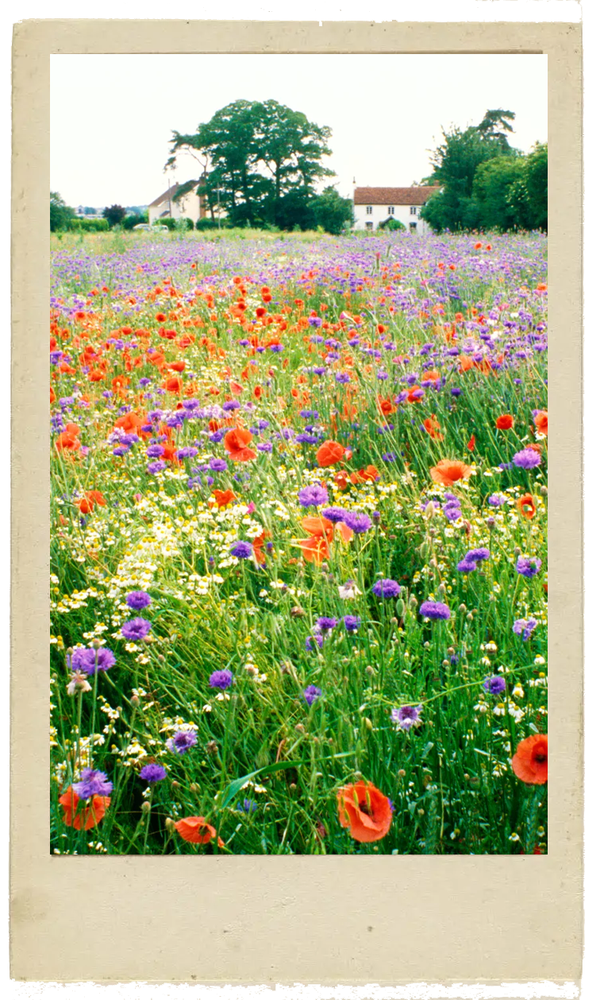
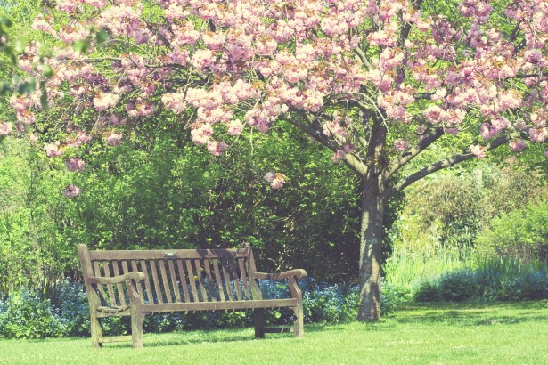

Springtime is upon us.
The birds celebrate her return with festive song,
and murmuring streams are
softly caressed by the breezes.
Thunderstorms, those heralds of Spring, roar,
casting their dark mantle over heaven,
Then they die away to silence,
and the birds take up their charming songs once more.

Largo
On the flower-strewn meadow, with leafy branches
rustling overhead, the goat-herd sleeps,
his faithful dog beside him.

Allegro
Led by the festive sound of rustic bagpipes,
nymphs and shepherds lightly dance
beneath spring’s beautiful canopy.